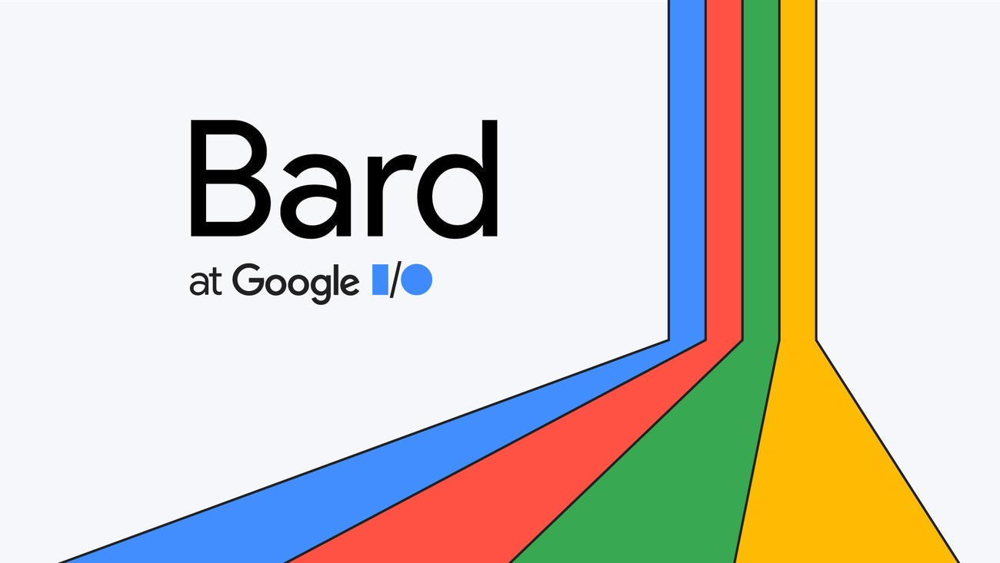

Giving Bard a chance

From my archive, written 29 March 2023. These are my impressions at the time.
I used google bard last night and in the morning. At first, I was hesitant. I asked it for blog names and It generates them but put “Bard’s…” in front of every name and for some reason, it couldn’t tell me jokes. I had a bad impression from this since these were some of the first questions I asked it and I’d already heard that it got basic things wrong, even doing so in its own demonstration. But as time went on, I realised that this isn’t actually that bad.
Sure, it messes up sometimes, but for small tasks, it does very well. I can’t express enough how grateful I am for the fact that it doesn’t have to be constantly refreshed. Whenever I used GPT-3, if I haven’t used it for about 30 minutes, I need to refresh the tab which begins a new chat, it seems minor, but can get annoying, especially when I’m trying to continue a prompt. However, bard hasn’t done this, I shut my computer overnight, wake up and there’s no refreshing required, I ask a question and it carries on like normal.
I just presumed all chat AI’s need to refresh constantly but clearly not. Theres also no 1 hour limits, error messages or network errors (even when ChatGPT displayed one when I asked a question to both at the exact same time) Bard is also a lot quicker in response time. When this thing is improved, I think it could even be as good as GPT, answering complex questions etc but for now I’d place it below GPT 3/4 but maybe contesting or even slightly higher than bing. No doubt it’s still early enough to be prone to jailbreak/dan prompts, so I’ve made a new gmail to just mess around with it and see what I can make it do.
I’m doing it on a throwaway email so if I get banned, I’ll still have my main account, I need to avoid what happened with bing. I even asked Bard if it was smarter than GPT, it said it was funnily enough. It said it has a larger dataset much larger than GPT and can access information through google search and has internet connection (unlike GPT 3) E. M. and 1,000 other AI experts want a pause on chat AI systems like GPT4 because they believe it to be unpredictable and something that so far is out of control.
It comes with the new plugins from GPT4 which give it access to the internet, relatively new I believe. It can do things like order food from Instacart, search and order flights, book reservations, practice language learning and compare shopping prices to name a few. Meaning that if you mess around with it enough, you won’t need to use the web, everything can be done through GPT4. Instead of using google SEO to advertise your product, businesses might need to make sure they’re GPT advertised, that GPT mentions them in certain product research requests.
I don’t think the plugins are even that much of a concern, I don’t think they’re groundbreaking things, they’re just what technology has always been; making tasks easier.